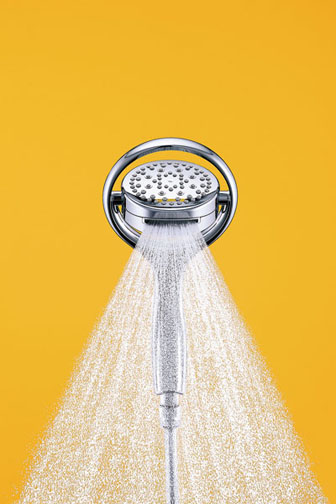
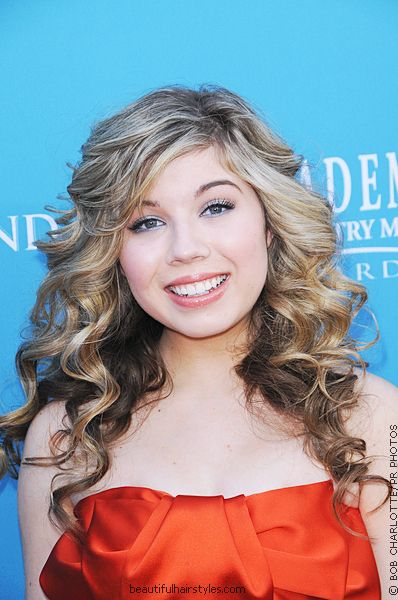

Kohler Co. - Flipside Handshower
The kitchen and bath giant is changing the way we look at multi-stream showerheads with its Flipside Handshower. Instead of filter controls that
turn to change the water flow and pressure, this showerhead uses rotation and four different openings to provide a full face spray, a circular
pattern face spray, a dense downpour, and a targeted massage spray. It comes in three polished-chrome and two brushed-nickel designs. 800-456-4537;
kohler.com. circle 755
posted on: 5/20/2010
Popular Long-Hairstyles for 2010

**Famous Actresses Hairstyles**

-Jennifer Stone (17) with long teen hairstyle in dark red or auburn. She has a full fringe and hot curls for a style that perfectly suits her age.

-Laura Bell Bundy (29) has a classic blonde hairstyle with long layers. They receive extra emphasis from the change in color from light to dark.
Her soft waves and big smile make her look very pretty.

-Jennette McCurdy (17) at the Country Music Awards with beautiful curly hairstyle. It's chunky and cute, and has very attractive color combinations.
"There is no pit so deep, that God is not deeper still." ~Corrie TenBoom
Copyright © Julianna2010: Time Capsule, 2010